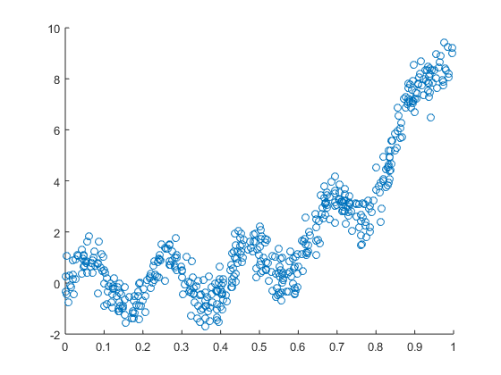
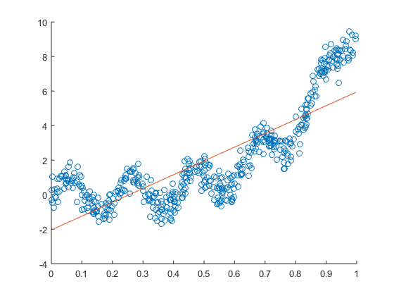

Contents
Question block 1
1)
addpath('src'); load('./data/reg_data_set_1.mat'); scatter(x,y); % This generated image corresponds to 1)
Question block 2
1) The optimal value of the regression is; [-2.047...;7.994...] 2) It looks like a quite good approximation really.
figure b = x\y; [w,X] = polireg(x,y,1); scatter(x, y); hold on plot(x,X*w,'-'); hold off
Question block 3
1) With an alpha of 0.1, the Theta values converge at:[-1,6; 7.4]
% 2) With an alpha of 0.1, in order to make the algorithm converge, 90 % iterations are needed % 3) stepsize = 0.1; %Do the gradient descent [theta, cost, hist] = grad2simple(x_tmp,y,[5; 5], stepsize, 90); figure plot(cost); % 4) It does, because this method uses a fixed step size, and it can jump % over the minimum figure plot(cost(80:83)); % 5) The alpha is already at 0.1, with the code below any parameters can be % tested stepsize = 0.1; % Define the step size on every dimension num_iter = 90; % Define the number of iterations before it end theta = [5; 5]; % Initial theta X = x_tmp; % Initial X matrix y = y; % Initial y matrix [theta, cost, hist] = grad2simple(X,y,theta, stepsize, num_iter); figure plot(cost); % EXTRA % Show the movement of the function in a contour res = lr_descent(x,y,[-5,10],[-5,10]); figure contour(res,8); hold on plot_dir(hist(:,1)+5,hist(:,2)+5) hold off %-------------------------------------------------------------------------%
Undefined function or variable 'x_tmp'. Error in del1 (line 29) [theta, cost, hist] = grad2simple(x_tmp,y,[5; 5], stepsize, 90);
Question block 4
figure; [~, cost, ~] = grad2(x_tmp,y,[0; 0], 1, 1000); plot(cost); hold on; [~, cost, ~] = grad2(x_tmp,y,[0; 0], .1, 1000); plot(cost); [~, cost, ~] = grad2(x_tmp,y,[0; 0], .01, 1000); plot(cost); hold off; % 1) The optimal values are % -2.0474 % 7.9948 % 2) The parameters used make the algorithm converge are: % > Learning rate = 1 % > Number of iterations = 200 % > Starting theta = 5,5 % 3) [theta, cost, hist] = grad2(x_tmp,y,[5; 5], 1, 200); plot(cost); hold off; % 4) It does not oscilate because the direction and the step size is % determined by the magnitude of the gradient, that does that when the % method is close to the local minimum it moves really slowly and it needs % a little ammount of iterations to get close to the center, but a lot to % converge. figure; plot(cost(150:190)); res = lr_descent(x,y,[-5,10],[-5,10]); %figure %surf(res,'EdgeColor','none','LineStyle','none','FaceLighting','phong') figure contour(res); hold on plot_dir(hist(:,1)+5,hist(:,2)+5)
Question block 5
1) The optimal values found for a quadratic polynomial regression are: [18.2255681003074;-10.2344557665670;1.06732192318857]
% 2) A quadratic function is better than a linear function to approximate % the function of the dataset because the original function has many % curves. figure [w,X]=polireg(x,y,2); scatter(x, y); hold on plot(sort(x),sort(X)*w,'-'); hold off clear
Question block 7
% Points 1, 2, 3 in the following code: load('data/reg_data_set_2.mat'); train_x = x(1:10); train_y = y(1:10); test_x = x(11:20); test_y = y(11:20); figure; scatter(train_x, train_y); hold on scatter(test_x, test_y); RMS_A_Train = zeros(6,1); RMS_A_Test = zeros(6,1); RMS_GD_Train = zeros(6,1); RMS_GD_Test = zeros(6,1); for i=1:6 deg = i; % Define the degree and execute the following code % Calculate weights analytically [w,X] = polireg(train_x,train_y,deg); % Calculate weights with gradient descent [w2,~, ~] = grad(train_x,train_y,(1:deg+1)',0.01, 1000); tX = polimat(test_x,deg); % RMS Analytical RMS_A_Train(i) = sqrt(sum(tX*w-train_y).^2); RMS_A_Test(i) = sqrt(sum(tX*w-test_y).^2); % RMS Gradient descent RMS_GD_Train(i) = sqrt(sum(tX*w2-train_y).^2); RMS_GD_Test(i) = sqrt(sum(tX*w2-test_y).^2); plot(sort(train_x),sort(X)*w,'-'); end figure scatter(train_x, train_y); hold on scatter(test_x, test_y); plot(sort(train_x),sort(X)*w2,'-'); % 4) Plot on the error curves figure plot(RMS_A_Train); hold on plot(RMS_A_Test); legend('Train','Test') %) 5) No they don't agree, that's because the number of samples is quite %small. The training set contains 10 samples and the test set another 10 %samples,so it's really difficult to decide what's the best model to fit %the original function.